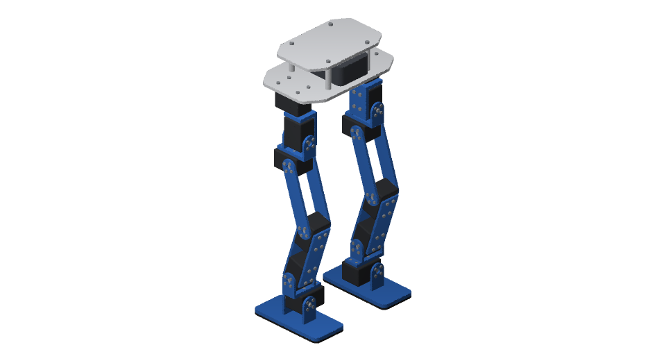
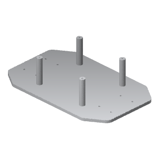
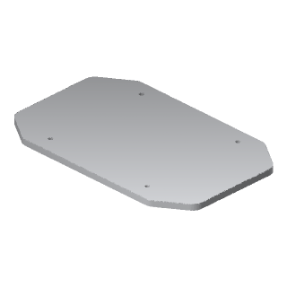
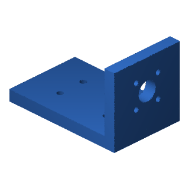
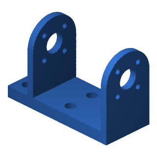
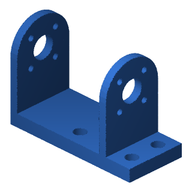
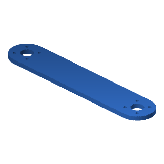
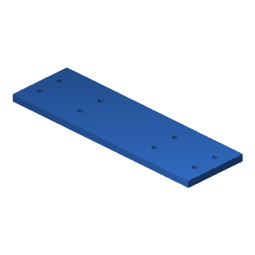
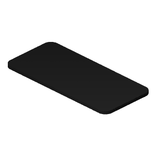
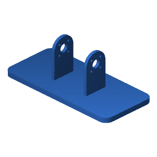

Print the RobotDSL Biped
The RobotDSL Biped is the RobotDSL Team's own design, drawn as CAD in code: a body and two legs, 1.895 kg in all. Every piece below prints without supports, as its file lies, on a printer's bed of 250 × 210 mm, 220 mm high. You can drive it in the Studio, under Walking robots.

- Each file holds its piece laid on the bed as it is printed: print it as it lies, without supports.
- PLA, printed solid (100% infill), as the robot's mass is worked out: 469 g in all.
- TPU for the sole pad: 56 g in all.
- A 0.4 mm nozzle: the rims round the screw heads sunk from the bed, 1.2 mm at most, are laid as three of its lines, and holes along the bed, 12 mm across at most, as arches.
Pieces
| Picture | Piece | Of | How many | Material | Files | Laid flat (mm) | Grams each |
|---|---|---|---|---|---|---|---|
 | plate | body | 1 | PLA | STL · STEP | 190 × 120 × 44 | 116.5 |
 | deck | body | 1 | PLA | STL · STEP | 152 × 96 × 4 | 68.3 |
 | hip bracket | left leg | 1 | PLA | STL · STEP | 54.5 × 34 × 33.5 | 16.8 |
 | hip U | left leg | 1 | PLA | STL · STEP | 55 × 24 × 37.2 | 12.5 |
 | femur plate | left leg | 2 | PLA | STL · STEP | 124 × 24 × 3 | 10 |
 | shin plate | left leg | 2 | PLA | STL · STEP | 104 × 32 × 3.2 | 13 |
 | ankle U | left leg | 1 | PLA | STL · STEP | 55 × 24 × 37.2 | 12.5 |
| sole pad | left leg | 1 | TPU | STL · STEP | 130 × 60 × 3 | 28.1 | |
| sole | left leg | 1 | PLA | STL · STEP | 130 × 60 × 45.8 | 54.2 | |
| hip bracket | right leg | 1 | PLA | STL · STEP | 54.5 × 34 × 33.5 | 16.8 | |
 | hip U | right leg | 1 | PLA | STL · STEP | 55 × 24 × 37.2 | 12.5 |
 | femur plate | right leg | 2 | PLA | STL · STEP | 124 × 24 × 3 | 10 |
 | shin plate | right leg | 2 | PLA | STL · STEP | 104 × 32 × 3.2 | 13 |
 | ankle U | right leg | 1 | PLA | STL · STEP | 55 × 24 × 37.2 | 12.5 |
 | sole pad | right leg | 1 | TPU | STL · STEP | 130 × 60 × 3 | 28.1 |
 | sole | right leg | 1 | PLA | STL · STEP | 130 × 60 × 45.8 | 54.2 |
Buy
- 12 × ROBOTIS Dynamixel XM430-W350
- 10 × ROBOTIS HN12-I101 idler sets
- Socket head cap screws (ISO 4762):
- 8 × M2.5 x 18
- 4 × M3 x 12
- 8 × M2 x 6
- 8 × M2.5 x 8
- 80 × M2 x 5
- 16 × M2.5 x 5
- 32 × M2.5 x 6
Between the body's plates is room for an allowance of 300 g for what a biped of twelve servos carries between its plates: a computer, the servos' interface and power hub, a three-cell battery and the wiring; the design names no product of them.
Servos
Each servo's horn is fitted as it comes: set each joint's zero in its servo, the leg straight down from its hip and its foot flat.
Licence
The files are published under CC BY 4.0, crediting the RobotDSL Team.